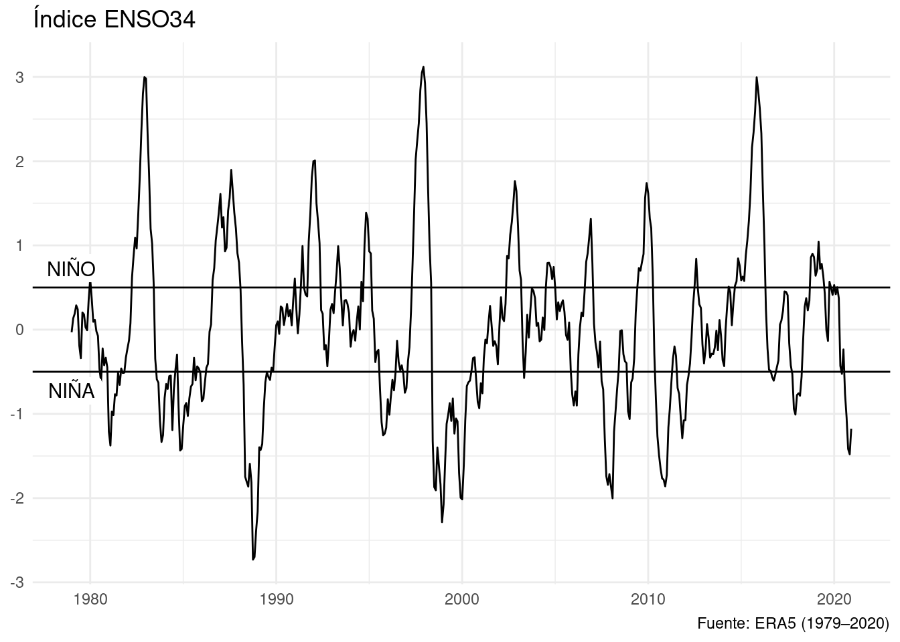

Relación entre presión a nivel del mar y ENSO
# Cargo los paquetes necesarios
library(magrittr)
library(ggplot2)
library(dplyr)
library(data.table)
library(metR)Voy leer los datos de temperatura de la superficie del mar y de presión a nivel del mar.
datos <- ReadNetCDF("datos/temperatura_mar.nc", vars = c("sst", presion = "msl"))Y también voy a armarme una función para plotear un mapa
mapa <- function(fill = "white", colour = NA) {
geom_polygon(data = map_data("world2"), aes(long, lat, group = group),
fill = fill, colour = colour, inherit.aes = FALSE, size = 0.2)
}Primero, calculo anomalías mensuales de temperatura de superficie del mar.
data.table
datos[, c("sst_a", "presion_a") := list(sst - mean(sst),
presion - mean(presion)),
by = .(longitude, latitude, month(time))]dplyr
datos <- datos %>%
group_by(longitude, latitude, mes = month(time)) %>%
mutate(sst_a = sst - mean(sst),
presion_a = presion - mean(presion)) %>%
ungroup() %>%
select(-mes)Con esto, defino el índice ENSO como la anomalía media en una caja entre 170ºE y 120ºE y 5ºS y 5ºN.
data.table
enso <- datos %>%
.[abs(latitude) < 5 & ConvertLongitude(longitude) %between% c(-170, -120)] %>%
.[, .(enso34 = mean(sst_a)), by = time]dplyr
enso <- datos %>%
filter(abs(latitude) < 5 & between(ConvertLongitude(longitude), -170, -120)) %>%
group_by(time) %>%
summarise(enso34 = mean(sst_a)) %>%
ungroup()¿Cómo evolucionó este índice a lo largo del tiempo?
ggplot(enso, aes(time, enso34)) +
geom_line() +
geom_hline(yintercept = c(-0.5, 0.5)) +
annotate("label", y = c(0.5, -0.5), x = lubridate::as_datetime("1979-01-01"),
label = c("NIÑO", "NIÑA"), vjust = c(-0.2, 1.2), label.size = grid::unit(0,"lines")) +
scale_x_datetime(name = NULL) +
scale_y_continuous(name = NULL) +
labs(title = "Índice ENSO34",
caption = "Fuente: ERA5 (1979–2020)") +
theme_minimal()
¿Cuál es la relación entre presión a nivel del mar y ENSO a nivel global?
data.table
enso_regresion <- datos %>%
.[enso, on = "time"] %>%
.[, FitLm(presion_a, enso34), by = .(longitude, latitude)] %>%
.[term != "(Intercept)"] dplyr
enso_regresion <- sst %>%
right_join(enso, by = "time") %>%
group_by(latitude, longitude) %>%
summarise(as.data.frame(FitLm(presion_a, enso34))) %>%
ungroup() %>%
filter(term != "(Intercept)") enso_regresion %>%
ggplot(aes(longitude, latitude)) +
geom_contour_fill(aes(z = estimate, fill = ..level..), na.fill = 0,
breaks = AnchorBreaks(binwidth = 25, exclude = 0)) +
geom_contour_tanaka(aes(z = estimate), na.fill = 0,
breaks = AnchorBreaks(binwidth = 25, exclude = 0)) +
mapa(fill = NA, colour = "black") +
scale_fill_divergent_discretised(name = "hPa") +
scale_x_longitude() +
scale_y_latitude() +
coord_quickmap() +
theme_minimal() +
labs(title = "Regresíon presión a nivel del mar con ENSO",
caption = "Fuente: ERA5 (1979–2020)")
LS0tCnRpdGxlOiAiUmVsYWNpw7NuIGVudHJlIHByZXNpw7NuIGEgbml2ZWwgZGVsIG1hciB5IEVOU08iCm91dHB1dDogCiAgaHRtbF9kb2N1bWVudDoKICAgIGNvZGVfZG93bmxvYWQ6IHRydWUKICAgIHRvYzogZmFsc2UKLS0tCgpgYGB7ciBzZXR1cCwgaW5jbHVkZT1GQUxTRX0Ka25pdHI6Om9wdHNfY2h1bmskc2V0KAogIGNhY2hlID0gVFJVRSwKICBlY2hvID0gVFJVRSwKICBtZXNzYWdlID0gRkFMU0UsCiAgd2FybmluZyA9IEZBTFNFCikKYGBgCgoKCmBgYHtyfQojIENhcmdvIGxvcyBwYXF1ZXRlcyBuZWNlc2FyaW9zCmxpYnJhcnkobWFncml0dHIpCmxpYnJhcnkoZ2dwbG90MikKbGlicmFyeShkcGx5cikKbGlicmFyeShkYXRhLnRhYmxlKQpsaWJyYXJ5KG1ldFIpCmBgYAoKVm95IGxlZXIgbG9zIGRhdG9zIGRlIHRlbXBlcmF0dXJhIGRlIGxhIHN1cGVyZmljaWUgZGVsIG1hciB5IGRlIHByZXNpw7NuIGEgbml2ZWwgZGVsIG1hci4KCmBgYHtyfQpkYXRvcyA8LSBSZWFkTmV0Q0RGKCJkYXRvcy90ZW1wZXJhdHVyYV9tYXIubmMiLCB2YXJzID0gYygic3N0IiwgcHJlc2lvbiA9ICJtc2wiKSkKYGBgCgpZIHRhbWJpw6luIHZveSBhIGFybWFybWUgdW5hIGZ1bmNpw7NuIHBhcmEgcGxvdGVhciB1biBtYXBhCgpgYGB7cn0KbWFwYSA8LSBmdW5jdGlvbihmaWxsID0gIndoaXRlIiwgY29sb3VyID0gTkEpIHsKICBnZW9tX3BvbHlnb24oZGF0YSA9IG1hcF9kYXRhKCJ3b3JsZDIiKSwgYWVzKGxvbmcsIGxhdCwgZ3JvdXAgPSBncm91cCksIAogICAgICAgICAgICAgICBmaWxsID0gZmlsbCwgY29sb3VyID0gY29sb3VyLCBpbmhlcml0LmFlcyA9IEZBTFNFLCBzaXplID0gMC4yKQp9CmBgYAoKUHJpbWVybywgY2FsY3VsbyBhbm9tYWzDrWFzIG1lbnN1YWxlcyBkZSB0ZW1wZXJhdHVyYSBkZSBzdXBlcmZpY2llIGRlbCBtYXIuIAoKIyMgey50YWJzZXQgLnVubGlzdGVkIC51bm51bWJlcmVkfQoKIyMjIGRhdGEudGFibGUKCmBgYHtyfQpkYXRvc1ssIGMoInNzdF9hIiwgInByZXNpb25fYSIpIDo9IGxpc3Qoc3N0IC0gbWVhbihzc3QpLCAKICAgICAgICAgICAgICAgICAgICAgICAgICAgICAgICAgICAgICAgIHByZXNpb24gLSBtZWFuKHByZXNpb24pKSwKICAgICAgYnkgPSAuKGxvbmdpdHVkZSwgbGF0aXR1ZGUsIG1vbnRoKHRpbWUpKV0KYGBgCgoKIyMjIGRwbHlyCgpgYGB7ciwgZXZhbCA9IEZBTFNFfQpkYXRvcyA8LSBkYXRvcyAlPiUgCiAgZ3JvdXBfYnkobG9uZ2l0dWRlLCBsYXRpdHVkZSwgbWVzID0gbW9udGgodGltZSkpICU+JSAKICBtdXRhdGUoc3N0X2EgPSBzc3QgLSBtZWFuKHNzdCksIAogICAgICAgICBwcmVzaW9uX2EgPSBwcmVzaW9uIC0gbWVhbihwcmVzaW9uKSkgJT4lIAogIHVuZ3JvdXAoKSAlPiUgCiAgc2VsZWN0KC1tZXMpCmBgYAoKIyMKCkNvbiBlc3RvLCBkZWZpbm8gZWwgw61uZGljZSBFTlNPIGNvbW8gbGEgYW5vbWFsw61hIG1lZGlhIGVuIHVuYSBjYWphIGVudHJlIDE3MMK6RSB5IDEyMMK6RSB5IDXCulMgeSA1wrpOLiAKCiMjIHsudGFic2V0IC51bmxpc3RlZCAudW5udW1iZXJlZH0KCgojIyMgZGF0YS50YWJsZQoKYGBge3J9CmVuc28gPC0gZGF0b3MgJT4lIAogIC5bYWJzKGxhdGl0dWRlKSA8IDUgJiBDb252ZXJ0TG9uZ2l0dWRlKGxvbmdpdHVkZSkgJWJldHdlZW4lIGMoLTE3MCwgLTEyMCldICU+JSAKICAuWywgLihlbnNvMzQgPSBtZWFuKHNzdF9hKSksIGJ5ID0gdGltZV0KYGBgCgojIyMgZHBseXIKCmBgYHtyLCBldmFsID0gRkFMU0V9CmVuc28gPC0gZGF0b3MgJT4lIAogIGZpbHRlcihhYnMobGF0aXR1ZGUpIDwgNSAmIGJldHdlZW4oQ29udmVydExvbmdpdHVkZShsb25naXR1ZGUpLCAtMTcwLCAtMTIwKSkgJT4lIAogIGdyb3VwX2J5KHRpbWUpICU+JSAKICBzdW1tYXJpc2UoZW5zbzM0ID0gbWVhbihzc3RfYSkpICU+JSAKICB1bmdyb3VwKCkKYGBgCgoKIyMgCgrCv0PDs21vIGV2b2x1Y2lvbsOzIGVzdGUgw61uZGljZSBhIGxvIGxhcmdvIGRlbCB0aWVtcG8/CgpgYGB7cn0KZ2dwbG90KGVuc28sIGFlcyh0aW1lLCBlbnNvMzQpKSArCiAgZ2VvbV9saW5lKCkgKwogIGdlb21faGxpbmUoeWludGVyY2VwdCA9IGMoLTAuNSwgMC41KSkgKyAKICBhbm5vdGF0ZSgibGFiZWwiLCB5ID0gYygwLjUsIC0wLjUpLCB4ID0gbHVicmlkYXRlOjphc19kYXRldGltZSgiMTk3OS0wMS0wMSIpLAogICAgICAgICAgIGxhYmVsID0gYygiTknDkU8iLCAiTknDkUEiKSwgdmp1c3QgPSBjKC0wLjIsIDEuMiksIGxhYmVsLnNpemUgPSBncmlkOjp1bml0KDAsImxpbmVzIikpICsKICBzY2FsZV94X2RhdGV0aW1lKG5hbWUgPSBOVUxMKSArCiAgc2NhbGVfeV9jb250aW51b3VzKG5hbWUgPSBOVUxMKSArCiAgbGFicyh0aXRsZSA9ICLDjW5kaWNlIEVOU08zNCIsIAogICAgICAgY2FwdGlvbiA9ICJGdWVudGU6IEVSQTUgKDE5NznigJMyMDIwKSIpICsKICB0aGVtZV9taW5pbWFsKCkKYGBgCgoKwr9DdcOhbCBlcyBsYSByZWxhY2nDs24gZW50cmUgcHJlc2nDs24gYSBuaXZlbCBkZWwgbWFyIHkgRU5TTyBhIG5pdmVsIGdsb2JhbD8KCiMjIHsudGFic2V0IC51bmxpc3RlZCAudW5udW1iZXJlZH0KCgojIyMgZGF0YS50YWJsZQoKYGBge3J9CmVuc29fcmVncmVzaW9uIDwtIGRhdG9zICU+JSAKICAuW2Vuc28sIG9uID0gInRpbWUiXSAlPiUgCiAgLlssIEZpdExtKHByZXNpb25fYSwgZW5zbzM0KSwgYnkgPSAuKGxvbmdpdHVkZSwgbGF0aXR1ZGUpXSAlPiUgCiAgLlt0ZXJtICE9ICIoSW50ZXJjZXB0KSJdIApgYGAKCiMjIyBkcGx5cgoKYGBge3IsIGV2YWwgPSBGQUxTRX0KZW5zb19yZWdyZXNpb24gPC0gc3N0ICU+JSAKICByaWdodF9qb2luKGVuc28sIGJ5ID0gInRpbWUiKSAlPiUgCiAgZ3JvdXBfYnkobGF0aXR1ZGUsIGxvbmdpdHVkZSkgJT4lIAogIHN1bW1hcmlzZShhcy5kYXRhLmZyYW1lKEZpdExtKHByZXNpb25fYSwgZW5zbzM0KSkpICU+JSAKICB1bmdyb3VwKCkgJT4lIAogIGZpbHRlcih0ZXJtICE9ICIoSW50ZXJjZXB0KSIpIApgYGAKCiMjIAoKYGBge3J9CmVuc29fcmVncmVzaW9uICU+JSAKICBnZ3Bsb3QoYWVzKGxvbmdpdHVkZSwgbGF0aXR1ZGUpKSArCiAgZ2VvbV9jb250b3VyX2ZpbGwoYWVzKHogPSBlc3RpbWF0ZSwgZmlsbCA9IC4ubGV2ZWwuLiksIG5hLmZpbGwgPSAwLCAKICAgICAgICAgICAgICAgICAgICBicmVha3MgPSBBbmNob3JCcmVha3MoYmlud2lkdGggPSAyNSwgZXhjbHVkZSA9IDApKSArCiAgZ2VvbV9jb250b3VyX3RhbmFrYShhZXMoeiA9IGVzdGltYXRlKSwgbmEuZmlsbCA9IDAsIAogICAgICAgICAgICAgICAgICAgICAgYnJlYWtzID0gQW5jaG9yQnJlYWtzKGJpbndpZHRoID0gMjUsIGV4Y2x1ZGUgPSAwKSkgKwogIG1hcGEoZmlsbCA9IE5BLCBjb2xvdXIgPSAiYmxhY2siKSAgKwogIHNjYWxlX2ZpbGxfZGl2ZXJnZW50X2Rpc2NyZXRpc2VkKG5hbWUgPSAiaFBhIikgKwogIHNjYWxlX3hfbG9uZ2l0dWRlKCkgKwogIHNjYWxlX3lfbGF0aXR1ZGUoKSArCiAgY29vcmRfcXVpY2ttYXAoKSArCiAgdGhlbWVfbWluaW1hbCgpICsKICBsYWJzKHRpdGxlID0gIlJlZ3Jlc8Otb24gcHJlc2nDs24gYSBuaXZlbCBkZWwgbWFyIGNvbiBFTlNPIiwgCiAgICAgICBjYXB0aW9uID0gIkZ1ZW50ZTogRVJBNSAoMTk3OeKAkzIwMjApIikKYGBgCgo=